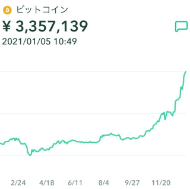

ビットコインとは世界で初めてのデジタル通貨です。デジタルなので取引は全てインターネット上で行われます。
サトシ ナカモトという人物がインターネット上に上げた論文を基にソフトウェアが作られて公開されたのが最初です。
サトシ ナカモト氏についてはその名前が仮名か本名かも明らかになっていません。
ビットコインの価値は定まっておらず、変動も大きいです。現に2020年3月ごろは60万円程度だったのにも関わらず、2021年1月5日時点で350万近くあります。
⇒
ビットコインには中央銀行は存在せず、コインの価値を証明したり、流通量を調整したり取引に介入したりしません。
国家から離れており影響も受けません。
その代わりにブロックチェーンで取引データを管理しています。
ブロックチェーンとは取引データをブロックという単位にまとめ、鎖のように関連付けてデータを蓄積していくことを言います。
それによって不正や改ざんを防ぎ、低コストかつ管理者が不在で信頼性を高めることが可能になっています。
ビットコインだけではなく、ブロックチェーン技術自体も注目されています。
アルトコインとは大抵ビットコインとセットで紹介されます。
通称Altertive coinとはビットコイン以外の暗号資産の総称です。
根本的な仕組みはビットコインと同じですが、ビットコインと比べて安く、数円単位で購入できるものもあります。
そのほかにも決済の完了が短いものであったり、取引が簡単なアルトコインもあります。
アルトコインは現在２０００種類もあります。その中から将来有望であり、
今後注目されると予想されるアルトコインをいくつか簡単に紹介していきたいと思います。
おそらく、聞いたことのあるコインも多いかと思います。
リップルはアメリカ発祥のアルトコインです。注目は低コストでシンプルな国際送金システムです。 イーサリアムはカナダ発祥のアルトコインです。注目はスマートコントラストです。
スマートコントラストとはブロックチェーン技術を利用した契約システムを指します。不動産などの面倒な取引を自動で契約手続きをしてくれます。
ビットコインキャッシュはビットコインと分離する形で誕生しました。
ビットコインのブロック容量の問題を解決し、送金スピードや処理速度が早いのが特徴です。
リップル(XRP)
海外への送金を銀行の仲介なしで短時間で少ない手数料で可能な点が評価されています。
イーサリアム(ETH)
ビットコインキャッシュ(BCH)
| サイト名/リンク | 特徴 | 取引仮想通貨 |
|---|---|---|
| Coin Check | 初心者も見やすい、わかりやすいチャート。 | 14種 |
| bitFlyer | スマホアプリで取引可能。ふるさと納税など様々なサービス。 | 12種 |
| DMM Bitcoin | アルトコインが豊富。 | 11種 |
| GMOコイン | 手数料の安さ。 | 9種 |